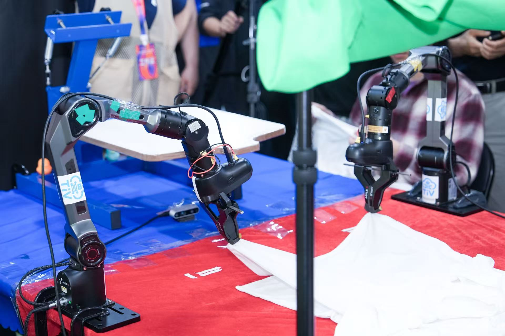
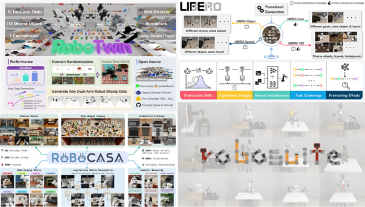
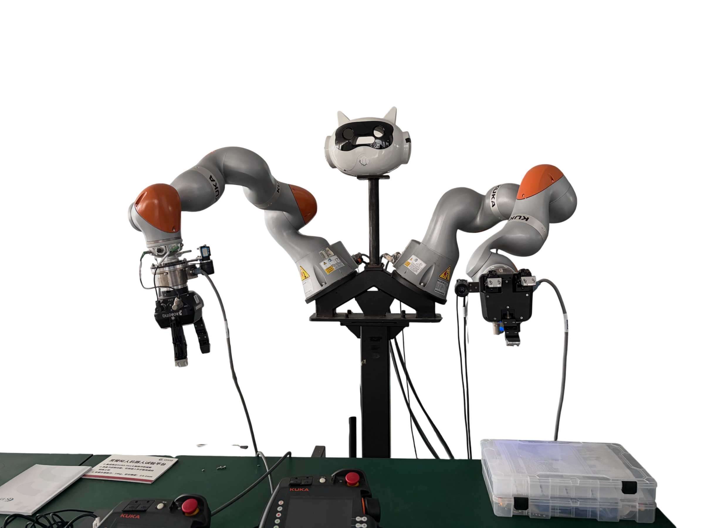
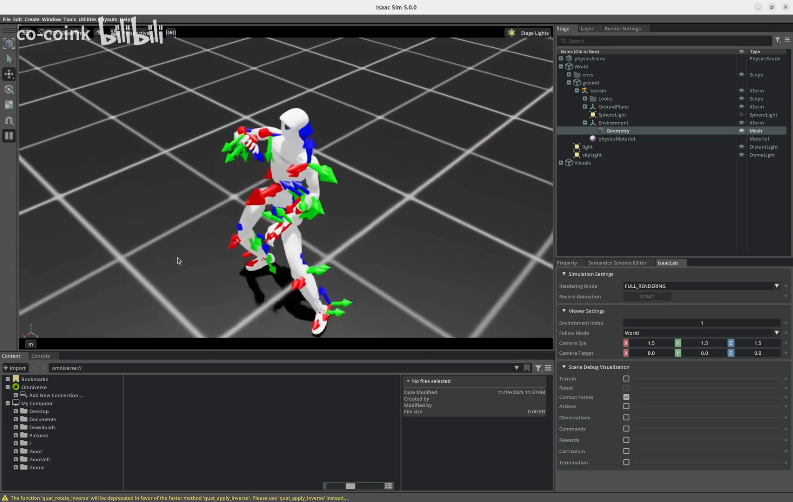

Chuanke Pang | 庞传科
PhD Student, Beihang University
I am currently pursuing my PhD degree in the Robotics Institute at Beihang University (BUAA). Before that, I received my B.S. degree from the School of Mechatronics Engineering at Harbin Institute of Technology (HIT), Harbin, China, and my M.S. degree from the School of Astronautics at Beihang University, Beijing, China.
My research lies at the intersection of robot manipulation and robotic foundation models, with broader interests in embodied intelligence, robot learning, and robotics.
chuankepang at buaa dot edu dot cn
- Best Innovation for Complex Environments at ICRA WBCD 2026
- InDex at IEEE Humanoids 2026
* denotes equal contribution or alphabetical ordering. See also my Google Scholar profile.
Deformable Object Manipulation in the WBCD 2026 Competition
Developed an autonomous system to pick stacked T-shirts and accurately load them onto a printing pallet, combining perception and control for reliable handling of flexible materials under strict time constraints.
Dexterous Teleoperation and Data Collection
Engineered a teleoperation pipeline for remote dexterous manipulation and data collection across VR, motion capture, haptics, vision-based hand tracking, and 3D mice, supporting Franka, UR, Rokae, Aubo, and bimanual systems.

UMI Teleoperation and Data Collection
Integrated the AgileX Pika UMI with a PIPER dual-arm robot for intuitive, high-fidelity teleoperation and egocentric demonstration collection for bimanual imitation learning.

Training and Evaluating on Benchmarks
Set up, ran, and evaluated robot-learning models on robosuite, RoboCasa, LIBERO, RoboTwin, RoboTwin-Mem, and RMBench, assessing generalization, failure modes, and task success.

VLM-Driven Dual-Arm Manipulation
VLM-Driven Scene Representation, Logical Reasoning, and Task Planning for Dual-Arm Long-Horizon Manipulation, with Teleoperation and Human-Robot Interaction.

Humanoid Loco-Manipulation
Built an RL motion-tracking framework in NVIDIA Isaac Sim and a Sim2Real pipeline with MuJoCo validation for robust whole-body coordination on physical humanoids.
Beihang University
PhD Student, Intelligence & Robotics
Beihang University
M.S. Robotics
Harbin Institute of Technology
B.S. Robotics Engineering